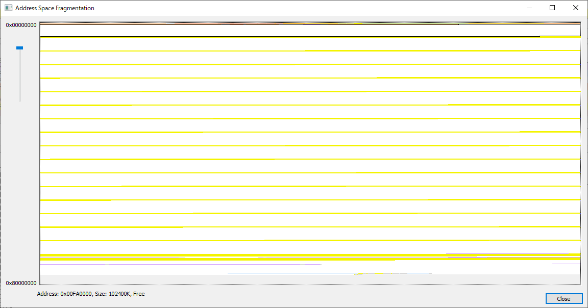

こんにちは、Japan Developer Support Core チームの松井です。
今回は、32 bit アプリケーションで発生するメモリ不足に関連するエラーについて、よくあるお問い合わせとその一般的な回答や見解などをご案内します。
大きなサイズのデータを扱うアプリケーションや、長時間実行し続ける 32 bit アプリケーションは、メモリ不足によりメモリ割り当てに失敗する問題に悩まされる場合があります。メモリ割り当てに失敗する状況は ERROR_NOT_ENOUGH_MEMORY (8) が返される、System.OutOfMemoryException がスローされるなどの形で顕在化しますが、原因はメモリ リークによる枯渇やフラグメンテーションなど様々です。
本記事の内容がメモリ不足に関連するエラーが発生したときの考え方やトラブルシュートの際の参考になれば幸いです。
よくあるお問い合わせ
物理メモリ (RAM) は十分あるのにメモリ割り当てに失敗する
アプリケーションが利用するメモリは通常、物理メモリ (RAM) から直接割り当てるのではなく仮想アドレス空間の中から割り当てられます。物理メモリの搭載量に関わらず、32 bit アプリケーションが利用可能な仮想アドレス空間は 32 bit で表現が可能な範囲 (0x00000000 ～ 0xFFFFFFFF) に制限されます。
さらに、仮想アドレス空間はユーザー モードで利用される領域とカーネル モードで利用される領域に分けられており、既定ではユーザー モードで利用できる領域は 0x00000000 ～ 0x7FFFFFFF の 2 GB です。
たとえ物理メモリが 4 GB 以上搭載されていても、32 bit アプリケーションからはユーザー モードの仮想アドレス空間のサイズを超えてメモリを利用することはできません。
2 GB に達していないのにメモリ割り当てに失敗する
メモリ割り当てを行うほとんどの方法では、指定したサイズの連続したメモリ領域を要求します。そのため、例えば空きメモリ領域の合計が 1 GB 以上あったとしても、空き領域が 500 MB と 500 MB に分断されているような場合は 500 MB を超えるメモリ割り当ては失敗します。

こちらの図は典型的な仮想メモリの断片化 (フラグメンテーション) の状況を vmmap.exe の Fragmentation view で表示したものです。白い部分はメモリの空き領域を、黄色い部分はコミット済みの領域を示しています。合計で見れば空き領域はたくさん空いているように見えますが、実際にはコミット済みの領域で分断されているため、大きなサイズの割り当てを要求した場合、連続領域が確保できず失敗します。
確実に xxx MB の連続した領域を確保できるようにしたい
残念ながら 32 bit アプリケーションでは、数百 MB といった大きなサイズのメモリ領域の割り当てを確実に成功させることは困難です。前述のようにメモリ割り当てには連続したメモリの空き領域が必要ですが、以下のようなアプリケーション以外の様々な要因で連続した空き領域は変動します。
- OS や .NET Framework などのランタイムやライブラリによって利用するメモリのサイズは一定ではない
- セキュリティ上の理由などによりモジュールやヒープなどのメモリ配置はランダムとなるため、連続した空き領域も一定ではない
- ウィルス対策ソフトウェアなどアプリケーションの動作に介入するソフトウェアの影響も受ける可能性がある
- 他のアプリケーションのアドオンとして動作する場合は、アプリケーション自体の動作や他のアドオンの影響も受ける可能性がある
同様の理由で、アプリケーションで確実に確保できる最大のメモリ サイズを事前に見積もることも困難です。一般的に、数百 MB 単位のサイズの要求は、開発環境や評価環境では問題なく成功しても、アプリケーションの変更や環境の相違によって失敗する可能性があります。また、アプリケーションの実行時間が長くなることでフラグメンテーションが進行して割り当てができなくなる場合もあります。
64 bit への移行ができない場合、メモリ確保に失敗する要因を個別に調査して取り除く方法を検討する余地はありますが、調査に時間を要する上に有効な方法が見つからないことも多くあります。一般的には、以下のような対処方法や緩和策が必要となります。
- 大きなサイズのメモリを必要とする処理を別プロセスに分離する
- 要求するメモリ サイズを分割する
- 比較的変動しにくいアプリケーション起動後の早い段階で大きなサイズが必要なメモリを予め確保しておく
- LAA フラグを指定する
また、メモリ確保の失敗に備えたエラーからの復帰処理や、メッセージやログの出力を用意しておくことも重要です。
LAA フラグを有効にする場合の注意点
LAA フラグは、アプリケーションが 2 GB 以上のアドレス空間を扱えることを示すフラグです。
32 bit 版 Windows では、OS の /3GB スイッチ を有効にすることで、LAA フラグが有効なアプリケーションに対して、カーネル モードで利用できるアドレス空間を 1 GB に縮小する代わりにユーザー モードで利用できるアドレス空間を 3 GB に拡張できます。ただし、カーネル モードのアドレス空間が減少することで、カーネル リソースを多く利用するアプリケーションでは正常に動作しなくなるなど影響を生じる可能性があります。そのため、運用に近い環境と条件での十分な検証が必要です。
64 bit 版 Windows では、32 bit アプリケーションは WOW64 と呼ばれるエミュレートされた 32 bit プロセス環境上で動作しており、ユーザー モードのアドレス空間を拡張することに伴うカーネル モードのアドレス空間の縮小は発生しません。そのため、32 bit OS 上で考慮が必要であったカーネル モードのアドレス空間が縮小することに伴う影響はありません。
また、LAA フラグを有効にした場合はアドレスとして 0x7FFFFFFF 以上の値が返される可能性が生じますが、これに関連してアプリケーションの実装において以下のような点に注意が必要です。
- システム DLL の多くは仮想アドレス空間の 2 GB 境界 (0x7FFFFFFF) 付近 に配置されるため、LAA フラグを有効にした場合も 2 GB を超える連続したメモリ領域の確保はできません。
- ポインター値の最上位ビットが 0 であることを仮定して何らかのフラグのように利用している場合は、正常に動作しなくなる可能性があります。
- ポインター値を符号付き整数として扱っている場合は意図しない結果となる可能性があります。特に、比較演算では結果が反転するなどの問題を生じます。
.NET Framework アプリケーションで LAA フラグを利用したい
現時点では、C# や Visual Basic .NET のコンパイラーには LAA フラグを有効化するコンパイル オプションは用意されていません。そのため、以下のように Visual Studio に附属する editbin ユーティリティ を使用して LAA フラグを付与する必要があります。
editbin.exe /LARGEADDRESSAWARE myapplication.exe
なお、フラグの変更はバイナリ ファイルの変更を伴うため、アプリケーションに署名している場合は署名とファイルのハッシュ値が一致しなくなります。アプリケーションに署名が必要な場合、(1) 署名なしでコンパイル、(2) editbin で LAA フラグを付与、(3) 署名、の順となるようにビルド ステップを変更する必要がありますのでご注意ください。
3rd party アプリケーションのLAA フラグを変更したい
editbin による LAA フラグの付与はアプリケーションの変更となるため、使用許諾などに反する可能性があります。また、アプリケーションが LAA フラグの有効化を想定しておらず、予期しない動作となる可能性があります。3rd party アプリケーションの変更については開発元へお問い合わせをお願いします。
OS や .NET Framework などのバージョンを上げたらメモリ不足に関連するエラーが発生するようになった
OS や .NET Framework のバージョンが異なると、仕様や実装の変更などでメモリなどのリソースの使われ方が変わる場合があります。32 bit アプリケーションが扱うには非常にシビアなメモリ要件、例えば大きなサイズの連続した領域を必要とする場合や、全体で 1 GB を超えるような仮想メモリ使用量となる場合は、一般的には影響を受けないようなわずかな変更であってもアプリケーションで問題を生じる可能性はあります。
このような場合、OS や .NET Framework などの変更点の観点で、何故バージョンを変えることでエラーが発生するようになったのか、想定される原因について知りたいといったお問い合わせをいただくことがあります。しかしながら、使用しているクラスや関数が特定済みで調査範囲が限定されている場合を除き、このような方法で原因の調査を進めることはお勧めしません。必要な情報採取などの手間はありますが、アプリケーションのメモリ割り当てや解放の状況について、変更前後のバージョンの両方で比較しながら相違が生じている処理を追及していくほうが調査を進める上では近道となることが多いです。
一般的に、OS や .NET Framework のバージョンが変わる場合には非常に多くの変更点があります。変更点が多いということは、原因の可能性となる仮説が多いということでもあり、問題の原因を特定するためにはすべての仮説について机上または実際に動作をさせての検証作業が必要になります。そのため、OS や .NET Framework の仕様変更や実装変更の観点から原因調査を進めることは難しく、非常に多くの時間がかかる作業になります。また、アプリケーションの動作も詳細に理解しないと仮説が正しいかどうか確かめる術もなく、結局アプリケーションの観点から情報採取などを進めて調査を進める流れとなることも多くあります。
弊社へお問い合わせをいただければ、サポート エンジニアにて問題が発生する際の状況やアプリケーションの詳細など背景を伺わせていただき、最適な調査方法を検討の上で提案をさせていただきます。是非アプリケーションのデバッグのご支援を含むサポート サービスのご利用をご検討ください。
メモリ リークについて
アプリケーションのメモリ リークのデバッグは奥が深いテーマです。リークしているリソースの種類やタイミングの特定、リークなのかただキャッシュしているだけなのかの判断および原因調査などを、複数のツールや手法を用いて適切に進める必要があります。アプリケーションのメモリ リークのデバッグについては、今後別の記事で取り上げたいと思います。
本ブログの内容は弊社の公式見解として保証されるものではなく、開発・運用時の参考情報としてご活用いただくことを目的としています。もし公式な見解が必要な場合は、弊社ドキュメント (https://docs.microsoft.com や https://support.microsoft.com) をご参照いただくか、もしくは私共サポートまでお問い合わせください。